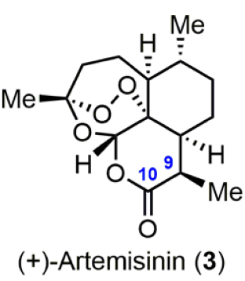
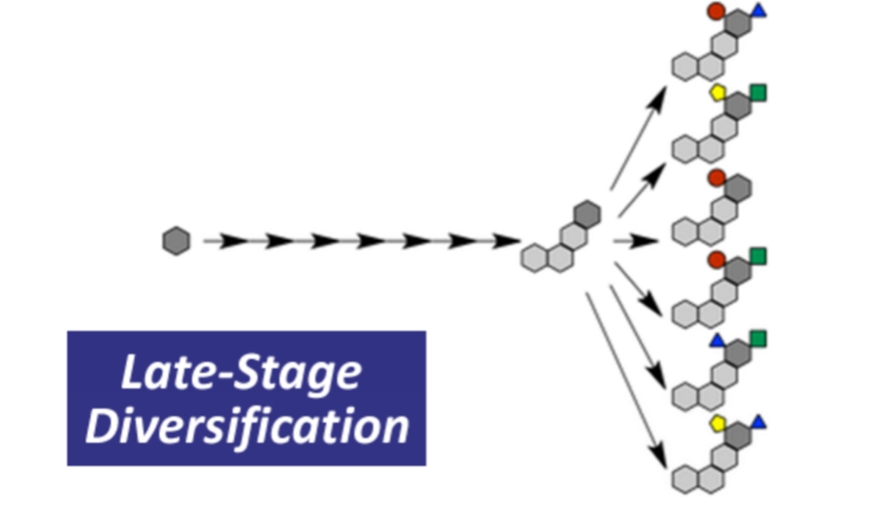
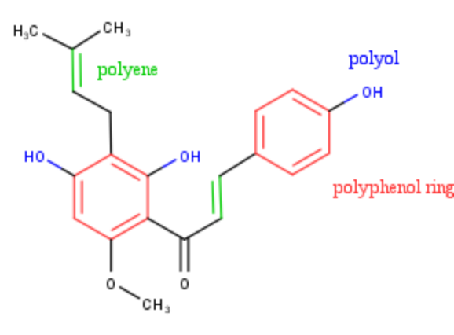
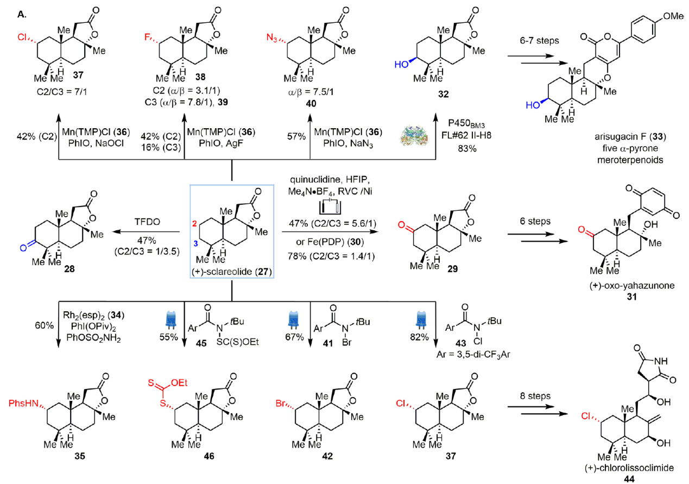

From the accidental discovery of penicillin, the first antibiotic, to the development of powerful anticancer drugs like taxol and vinblastine, many of these groundbreaking discoveries were stumbled upon by scientists during their chance encounters with nature. Nature is an incredible source of inspiration and deserves to take a significant place in the field of science. Within nature’s intricate ecosystems, organisms produce a variety of natural products, bringing chemical diversity found in plants, microbes, marine organisms, and so on.

Natural products are organic compounds that have dwelled in living organisms over millions of years. They have evolved to perform useful functions, such as defense mechanisms or act as signaling molecules. Usually, natural products possess intricate chemical structures (Figure1), often far more complex than those of human-made synthetic molecules. Their born-to-be complex structures offer unique 3D shapes, allowing them to interact with biological molecules in our body.
Moreover, natural products have successfully demonstrated efficacy against various diseases long time ago since they provide organisms survival advantages in their ecological environment. Approximately 200 years ago, a pharmacist successfully extracted the first pure compound with pharmacological activity from a plant. This compound, morphine, was obtained from opium derived from the cut seed pods of the poppy plant (Li & Vederas, 2009). Morphine, with its potent analgesic properties, has been widely utilized in managing severe pain and providing relief to countless patients. At the same time, it is worth noticing that approximately one-third of drugs approved by the FDA over the 30 years from 1981 to 2010 have been developed from natural products or their derivatives (Newman & Cragg, 2012). Natural Products’ complexity and diversity make understanding and harnessing the full potential of them becomes one of the key research fields of medicine.
However, despite natural products’ immense potential in drug discovery, there is also huge challenges present in turning a known-to-be effective compound extracted from plants into a pellet that is edible for patients. Some plants are poisonous by simply chewing its leaves. So, most fundamentally, we need to make sure the natural product is safe for us to digest Perhaps you have already progressed to considering the broader perspective, thinking how we can optimize the efficacy of the extracted natural product in addressing specific diseases.
Put it simple, a kid is good at math, but to become a mathematician, he needs additional training. A natural product is effective against a disease, but to become a useful drug candidate, it needs additional modification. Their supply can be limited as they are often found in small quantities in their natural sources. Extracting and purifying these compounds can be labor-intensive and time-consuming. Additionally, their complex structures pose synthetic challenges, making their chemical synthesis difficult and expensive.

To overcome these challenges, scientists have developed innovative strategies, and one such approach is Late-Stage Diversification. Compared with laborious total synthesis, which is the process of making a complex compound from a simple molecule through scores of synthetic steps, late-stage diversification involves the selective modification of natural products at-the-end by giving them useful functional groups.
You can think of functional groups as different accessories to perform various needs. Each giving functional group enables natural product to acquire different functions. This strategy allows for the introduction of desired properties, such as improved potency or selectivity, while preserving the unique structural features and biological activities of the natural products. As a result, we could “dress” the natural product in the desired way we want to modify it. As the name explains itself, late-stage diversification will not only ensure the activity of the original skeleton structure, but also increase the diversity of compounds and directly synthesize multiple derivatives.
Of course, dress to alter the inherent property of natural product is not an easy mission. Natural products usually have complex ring system skeletons and diverse active groups. There are multiple identical reactive groups in many natural products, such as polyols, polyenes and polyphenol rings (Figure 3). The derivatization of such natural products usually requires the use of protecting groups.

Protecting groups are temporary modifications to functional groups in a molecule, precenting unwanted reactions so to allow specific modifications while leaving other parts untouched. In deriving natural products, protecting groups are essential tools to facilitate selective modifications, control reactivity, and maintain the integrity of the natural product.
Selective functionalization of specific active groups with the help of protecting groups enables more efficient synthesis of derivatives of natural products. Additionally, machine learning can possibly accelerate this process due to its ability of analyze vast amounts of data and identify patterns. By training algorithms on large datasets of chemical reactions and their corresponding outcomes, machine learning models can learn to predict the most effective reactions and protecting groups for derivatization of natural products.
In addition to a variety of active groups, inert carbon-hydrogen (C-H) bonds are widely found in natural products. Tremendous developments in the fields of carbon-hydrogen activation, photochemistry, electrochemistry, and biocatalysis have enabled the direct functionalization of carbon-hydrogen bonds in complex natural products. Taking (+)-sclareolide (a widely used natural compound from plants that serves as a testing platform of bioactive small molecules for various C-H functionalization reactions) as an example, different derivatized products can be obtained under different catalysts and reaction conditions via selective carbon-hydrogen functionalization (Figure 4).

The (+)-sclareolide (27) is the extracted natural product. Over the past decades, scientists have developed a wide range of novel techniques in C-H functionalization reactions. To start, one of the reaction type worth noticing is oxidation. The addition of oxygen changes (+)-sclareolide’s solubility and enhances its hydrogen bonding interactions with target proteins. For instance, when 27 has been oxidized by oxidant TFDO, the C3 (oxidation at the position of third carbon atom, counting in the anticlockwise direction) oxidized product 28 was formed with C2 oxidized product 29. Besides oxidation reactions, enzymes have been employed for the selective addition of hydroxy group (OH group) to 27. For example, P450BM3 FL#62 II-H8 catalyzes 27 to procure 32 through selective hydroxylation (Hong et al., 2020).
Besides introduction of oxygen, selective halogenation (substitution or addition reaction in which halogen atoms are introduced to the organic compound) reactions have also been investigated dur to their important pharmacological properties. For instance, a C-H chlorination reaction of 27 to obtain 37 is developed by using sodium hypochlorite as the chlorine source. With sufficient 37, 44 -- an anti-tumor natural product -- could be synthesized in nine steps starting from 27. Another example of halogenation is the functionalization of 27 using 41 (brominating and oxidizing agent that is used as source for bromine) under visible light irradiation to obtain bromination product 42. The use of (+)-sclareolide as a model substrate demonstrates the power of late-stage diversification of natural product to acquire abundant derivatives (Hong et al., 2020).
Despite progress, the broader application of late-stage diversification of natural products is hindered by the limitations of current synthetic methods. Efforts should be directed towards expanding the available chemical reaction toolbox to enable effective diversification of highly functionalized molecules. Developing catalyst-controlled strategies, rather than substrate-controlled methods, is crucial for accessing diverse sites on natural products.
The effective methods to actualize C-H bond functionalization can be roughly divided into three categories. The first is substrate control method, which relies on the difference in reactivity of C-H bonds in substrates. When certain C-H bond has a higher tendency to participate in reaction compared to others, this C-H bond will be selected. However, this method is highly dependent on the substrate. The second method is highly dependent of the functional groups present.
The third method is catalyst control method. Although catalysts are also used in the above two methods, the selectivity is co-controlled by the catalyst and the substrate. To eliminate the dependent on the substrate, the catalyst control method, which relies entirely on the catalyst to control selectivity has received increasing attention. The catalyst control method is to design a series of catalysts with special three-dimensional structures to recognize various types of C-H bonds with specific spatial hindrance properties, thereby controlling the selectivity of the reaction. Recently, Huw Davies group research actualized the selective functionalization on primary, secondary, and tertiary C-H bonds by catalyst control method (Liao et al., 2018).
Besides, the investigation of late-stage diversification of natural products in drug discovery has been limited due to synthetic method constraints. However, with the development of new catalysts and reactions just like the catalyst-controlled method discovered by Huw Davis group; beyond late-stage diversification application in the field of drug discovery, efficient late-stage diversification can provide ample analogues and bioactive probes for chemical and biological studies and provides insights into natural product biosynthetic relationships. This knowledge can inform the discovery of new natural products with potential therapeutic applications. It holds great promise for the development of novel therapeutics and the exploration of the intricate world of natural product biosynthesis. To fully explore the potential of late-stage diversification, collaboration among diverse research fields, including synthetic chemistry, medicinal chemistry, and chemical biology, is necessary.
Late-stage diversification offers a strategic approach to fine-tune and improve the properties of lead compounds, increasing the likelihood of success in drug campaigns and ultimately advancing the development of effective and safe medications. It allows for the modification of lead compounds, enabling optimization for enhanced efficacy, reduced toxicity, and improved pharmacokinetic properties. These transformations offer a gateway to rapidly access various derivatives and unlock their potential in drug development.
Within the petals of a flower or the leaves of a plant, lies the potential to transform lives and rewrite the course of medical history. Through the exploration of natural products and the innovative application of late-stage diversification, researchers are uncovering new possibilities for diseases treatment. The ongoing efforts of scientists are paving the way for the development of novel therapies that hold the potential to transform the lives of patients worldwide.
Cosine. (2017, April 18). 合成後期多様化法 Late-Stage Diversification | Chem-Station (ケムステ). Www.chem-Station.com. https://www.chem-station.com/chemglossary/2017/04/late-stage-diversification.html
Hong, B., Luo, T., & Lei, X. (2020). Late-Stage Diversification of Natural Products. ACS Central Science, 6(5), 622–635. https://doi.org/10.1021/acscentsci.9b00916
Li, J. W.-H. ., & Vederas, J. C. (2009). Drug Discovery and Natural Products: End of an Era or an Endless Frontier? Science, 325(5937), 161–165. https://doi.org/10.1126/science.1168243
Liao, K., Yang, Y.-F., Li, Y., Sanders, J. N., Houk, K. N., Musaev, D. G., & Davies, H. M. L. (2018). Design of catalysts for site-selective and enantioselective functionalization of non-activated primary C–H bonds. Nature Chemistry, 10(10), 1048–1055. https://doi.org/10.1038/s41557-018-0087-7
Newman, D. J., & Cragg, G. M. (2012). Natural Products As Sources of New Drugs over the 30 Years from 1981 to 2010. Journal of Natural Products, 75(3), 311–335. https://doi.org/10.1021/np200906s